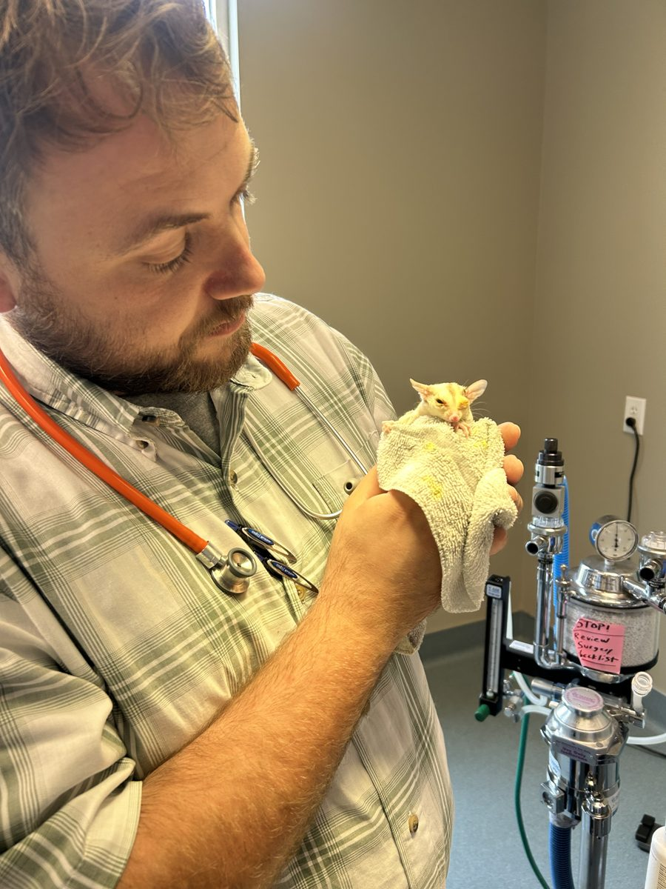

Dr. Logan Kopp is Nashville's sugar glider specialist. At Priest Lake Veterinary Hospital in Antioch, he treats nutrition problems, injuries, and other glider health issues, and families come from Smyrna, La Vergne, and across Middle Tennessee.

Sugar gliders are small, nocturnal, and social, and many of the illnesses that bring them in start with diet or housing. Dr. Kopp is an exotic companion mammal specialist and sees sugar gliders for primary care and referral cases at Priest Lake Veterinary Hospital in Antioch.
Bring the full diet, including any homemade mix, and tell us who the glider lives with. There are real gaps in what's known about sugar glider medicine, so we don't start anything until we've talked it through with you. For home care, see sugar glider nutrition and metabolic bone disease.
Hind limb weakness, tremors, or a fracture after ordinary activity can be metabolic bone disease, usually from a diet too low in calcium, too high in phosphorus, or short on other nutrients. Obesity is a nutrition problem too, and we'll look at it during the same visit. Call if your glider is weak, shaking, or reluctant to climb, and bring what you're already feeding. Please hold off on changing the diet until the visit.
Facial swelling, dropping food, or a glider that cries when chewing can be a dental abscess or periodontal disease. If the face is swollen or your glider stops eating, call (615) 361-4646 while the hospital is open. We take skull and dental radiographs here in the hospital, and treatment is planned around anesthesia and pain control for a very small patient.
A glider chewing on a limb, the tail, or a surgical site needs a call while the hospital is open, at (615) 361-4646. When you call, tell us if your glider lives alone or if a group is fighting. The workup looks at pain, infection, stress, and social housing problems. Wound care starts at the visit, and the housing plan is part of treatment too.
Hair loss, scabs, and parasites are evaluated with the housing and the diet. Diarrhea and dehydration move quickly in a glider this size. A glider that is limp, cold, or not eating needs a call before you drive, while the hospital is open.
We see urinary disease, reproductive disease, pouch infections, and mastitis in sugar gliders. If a joey is in trouble, the pouch is swollen, or a female is straining, call (615) 361-4646 while the hospital is open.
Falls, cage injuries, and fractures are common reasons for an urgent visit. Some fractures can be repaired in partnership with board-certified veterinary surgeons (DACVS), and others are referred. We also do soft-tissue surgery, castration, and wound closure when they're right for the glider. Anesthesia is planned for a small marsupial, with a dedicated anesthesia technician monitoring ECG, oxygen levels, carbon dioxide, blood pressure, and temperature, along with warmth and pain control. Dr. Kopp is also a Fellow in Companion Animal Pain Management (FABVP-CAPM).
Dr. Logan Kopp grew up in Nashville and earned his veterinary degree at the University of Tennessee. He's board-certified by the American Board of Veterinary Practitioners in Exotic Companion Mammal Practice, DABVP (ECM), and he's the only veterinarian currently practicing in Tennessee with that certification. He's also a Fellow in Companion Animal Pain Management (FABVP-CAPM).
If you're a veterinarian, here's how to refer a patient.
Use a secure carrier with a hide, and double-check that the latch is closed. A written diet and a photo of the cage tell us more than a general description. If your glider is chewing a limb on the way in, call ahead so the team knows you're coming.
Call while the hospital is open if your sugar glider:
We're open Monday through Friday, 7:30 AM to 7:00 PM, and closed on weekends. Visits are by appointment, so please call (615) 361-4646 before you come in, even for an emergency. During those hours we can usually accept urgent transfers from primary care veterinarians, and we may be able to see emergency cases. After hours, exotic companion mammal consults go through Veterinary Emergency Group in Franklin, Murfreesboro, and West Nashville. And please don't give your pet any human pain medicine.
To book, call Priest Lake Veterinary Hospital at (615) 361-4646.
Call Priest Lake Veterinary Hospital at (615) 361-4646 to book an appointment with Dr. Logan Kopp, Nashville's sugar glider specialist. Visits are by appointment, and the hospital is at 2445 Morris Gentry Blvd, Antioch, TN 37013.
Hind limb weakness can be metabolic bone disease from a diet problem, and it can also be trauma, pain, or another illness. Bring a list of everything the glider eats. Call Priest Lake Veterinary Hospital at (615) 361-4646.
Call while the hospital is open if a glider is chewing on itself. Self-mutilation can follow pain, infection, stress, or a social housing problem. The hospital may be able to see emergency cases during hours. Always call first at (615) 361-4646.
Yes. Families bring sugar gliders from Smyrna, Franklin, and across Middle Tennessee. The hospital is in Antioch. Call Priest Lake Veterinary Hospital at (615) 361-4646.
We also see hedgehogs, hamsters, gerbils, and degus. See the hedgehog vet in Nashville and the exotic mammal vet.
The hospital is in Antioch, and families come from all over the Middle Tennessee area, including Murfreesboro, Franklin, Mt. Juliet, Brentwood, Hermitage, Smyrna, La Vergne, and Nolensville.
Call Priest Lake Veterinary Hospital at (615) 361-4646 to book an appointment with Dr. Kopp. If your glider is weak, chewing on itself, or not eating, mention that first.
Priest Lake Veterinary Hospital
2445 Morris Gentry Blvd
Antioch, TN 37013
Phone: (615) 361-4646
Website: priestlakevet.com
Hours
Monday to Friday: 7:30 AM to 7:00 PM
Saturday and Sunday: Closed
Veterinarians can send a diet history, housing notes, and any lab work or images ahead of the visit. Patients return to the referring clinic for ongoing care.
This page is general information, not medical advice for your pet. Reading it doesn't create a veterinarian-client-patient relationship (VCPR). Please talk with your own veterinarian before making changes to your pet's care.